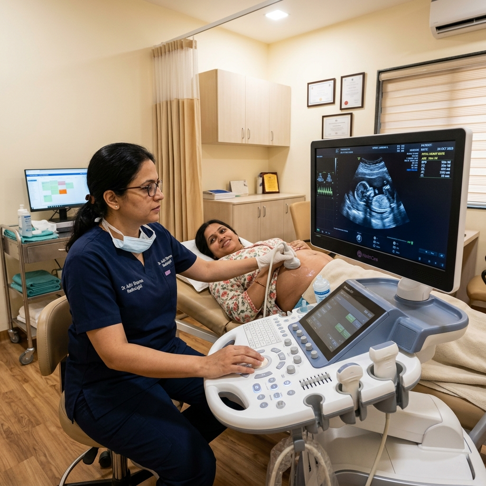

Emergency Support
+91 7774 223344- 24 Hours Emergency and Critical Care Trauma Services are operational 24x7.
- In-house Advanced Dialysis unit provides cashless support for CGHS and Ayushman patients.
- Sankalp Assisted Fertility IVF Center has hit a milestone of 1,500+ successful IVF babies.
- OPD bookings are open daily from 9:00 AM to 6:00 PM. Book online to reserve.
A Heritage of Trust and Advanced Healing
Located at the heart of Ambikapur, Sankalp Hospital has spent over 15 years providing top-tier clinical diagnostics, patient care, and cutting-edge treatments across diverse medical fields.
We are dedicated to establishing patient-centered medical excellence. Our state-of-the-art diagnostic imaging, high-success IVF clinics, modular operation theatres, and dedicated pediatric divisions ensure you and your loved ones receive comprehensive clinical support.
Patient Safety First
Advanced sanitization, ICU monitoring, and expert trauma handling.
Awarded Clinicians
Our senior doctors carry decades of medical expertise in critical fields.
Advanced Diagnostics
High-resolution pathology labs and modular surgical suites.
Holistic Wellness
Personalized post-surgery protocols and dedicated support staff.

15+
Years of Caring
Our Journey of Care in Numbers
Over a decade of dedicated clinical excellence, delivering reliable diagnostics, high-success treatments, and advanced surgical care to the community of Ambikapur.
Interactive Specialties Hub
Explore our advanced departments, expert medical teams, and specialised clinical procedures at Sankalp Hospital.
Ophthalmology (Eye Care)
Sankalp Hospital's Ophthalmology Department provides comprehensive diagnostic, surgical, and therapeutic eye care. Our advanced clinical wing handles vision impairments, cataract surgeries, and specialized ocular conditions with precision.
Key Clinical Procedures
- Phacoemulsification for Cataracts
- Computerized Eye Testing
- Glaucoma Detection & Therapy
- Pediatric Vision Screening
- Dry Eye Diagnostic Clinics
- Diabetic Retinopathy Management
24 Hours Emergency & Trauma
Our emergency department is operational 24/7, providing immediate triage, life-saving resuscitation, and surgical interventions. Backed by dedicated trauma surgeons and advanced imaging, we handle acute medical crises round-the-clock.
Key Clinical Procedures
- Advanced Cardiac Life Support (ACLS)
- Trauma & Accident Resuscitation
- Acute Poisoning & Burn Care
- Ventilator & ICU Critical Stabilization
- 24/7 Ambulance & Retrieval Services
- Bedside Emergency Ultrasound
Obstetrics & Gynecology
Dedicated to women's health through all stages of life. We provide comprehensive maternal care, high-risk pregnancy monitoring, painless labor suites, and advanced keyhole surgeries for gynecological disorders.
Key Clinical Procedures
- High-Risk Pregnancy Management
- Painless Delivery (Epidural Analgesia)
- Laparoscopic Hysterectomy
- Ovarian Cyst & Fibroid Surgeries
- Menopause Clinic & Hormonal Testing
- Adolescent Gynecology Consultations
Assisted Fertility (IVF/ICSI/IUI)
Sankalp Assisted Fertility (IVF) Center is a premier center of reproductive medicine. With state-of-the-art embryology labs and advanced incubation systems, we support couples on their journey to parenthood with empathy and high success rates.
Key Clinical Procedures
- In Vitro Fertilization (IVF)
- Intracytoplasmic Sperm Injection (ICSI)
- Intrauterine Insemination (IUI)
- Egg & Sperm Cryopreservation
- Blastocyst Culture & Embryo Transfer
- Male Infertility Diagnostics
General & Laparoscopic Surgery
Our surgical unit specializes in minimally invasive laparoscopic procedures. By utilizing keyhole entries, patients benefit from smaller incisions, reduced post-operative pain, shorter hospital stays, and quicker recovery times.
Key Clinical Procedures
- Laparoscopic Gallbladder Removal
- Hernia Repair (Inguinal/Umbilical)
- Laparoscopic Appendectomy
- Diabetic Foot Wound Management
- Laser Surgery for Piles & Fissures
- Major & Minor Soft Tissue Excisions
Pediatrics & Neonatology
Comprehensive healthcare for infants, toddlers, and adolescents. Our state-of-the-art Neonatal ICU (NICU) provides critical incubator care for premature babies, managed by expert pediatricians.
Key Clinical Procedures
- Level-III Neonatal ICU (NICU)
- Pediatric Vaccination & Immunization
- Growth & Development Assessment
- Pediatric Asthma & Allergy Care
- Pediatric Emergency Stabilization
- Childhood Nutrition & Diet Counseling
Orthopaedics & Joint Surgery
Providing advanced orthopedic care for joint, bone, and muscular conditions. From complex joint replacements to sport trauma management and fracture healing, our surgeons employ the latest techniques.
Key Clinical Procedures
- Total Hip & Knee Joint Replacements
- Arthroscopic Ligament Repairs (ACL/MCL)
- Complex Fracture & Trauma Fixations
- Spine Decompression & Fusions
- Osteoporosis & Arthritis Management
- Specialized Post-Surgical Rehab
Urology & Kidney Care
Advanced kidney, bladder, and prostate care. The urology department offers minimally invasive keyhole laser options for kidney stones and comprehensive treatments for urogenital conditions.
Key Clinical Procedures
- Laser Kidney Stone Removal (PCNL/URSL)
- Laser Surgery for Prostate (TURP)
- Urinary Incontinence Treatments
- Pediatric Urology Conditions
- Recurrent UTI Diagnostic Management
- Urogenital Reconstruction Surgery
Psychiatry & Mental Health
Compassionate mental wellness care designed to restore balance and emotional health. We provide clinical evaluations, cognitive therapies, and counseling for stress, anxiety, and neuro-behavioral disorders.
Key Clinical Procedures
- Cognitive Behavioral Therapy (CBT)
- Anxiety & Depression Counseling
- Clinical Mood Disorder Management
- Pediatric Behavior Evaluations
- Sleep & Stress Management Plans
- Family & Marriage Counseling Sessions
ENT (Ear, Nose, Throat)
Comprehensive diagnostic and surgical solutions for ear, nose, throat, head, and neck conditions. Our specialists provide pediatric hearing screens, sinus treatments, and tonsillectomies using modern endoscopic equipment.
Key Clinical Procedures
- Endoscopic Sinus Surgery (FESS)
- Tonsillectomy & Adenoidectomy
- Tympanoplasty (Eardrum Repair)
- Hearing Impairment Diagnostics
- Snoring & Sleep Apnea Care
- Salivary Gland & Thyroid Consults
Department of Anesthesia
Playing a critical role in patient safety during surgeries. Our anesthesiologists deliver customized general, regional, and local anesthesia, along with comprehensive post-operative pain relief protocols.
Key Clinical Procedures
- General & Regional Anesthesia
- Epidural & Painless Labor Support
- Pre-Anesthetic Health Profiling
- Chronic & Acute Pain Relief Plans
- ICU Life Support Management
- Post-Surgical Sedation Protocols
Onco Surgery (Cancer Care)
Providing high-precision surgical treatment for cancer. Our oncological surgeons specialize in tumor resections, biopsies, and organ-preserving surgeries, working closely with medical oncology for comprehensive cancer therapies.
Key Clinical Procedures
- Solid Tumor Resection & Biopsy
- Breast Cancer Sparing Surgeries
- Gastrointestinal Oncology Surgeries
- Sentinel Lymph Node Evaluation
- Cancer Screening & Diagnostics
- Chemotherapy Port Placements
Meet Our Medical Experts
Decades of collective experience, academic credentials, and dedication to patients' well-being.
World-Class Infrastructure
Sankalp Hospital is equipped with state-of-the-art medical technology, clean-air systems, and patient comfort designs.
Laminar Air Flow
Zero bacteria OT environmentsDeluxe Private Wards
Designed for fast healing and privacyStrict Sterile Protocols
24/7 disinfection schedule


High-Tech Pathology Laboratory
Fully automated analyzer machines for delivering rapid, precise diagnostic test results.

Advanced Ultrasound Diagnostic Room
Armed with advanced ultrasound imaging machines for pregnancy scans.
Health Videos & Patient Stories
Doctor-led explainers, treatment guides and real recovery stories from Sankalp Hospital.
 ??? ??? 20cm ?? Cyst ???? ?? ???? ?? ????? ??? ?? ??? ?? ??? | Dr Ankita Bansal Goyal
??? ??? 20cm ?? Cyst ???? ?? ???? ?? ????? ??? ?? ??? ?? ??? | Dr Ankita Bansal Goyal ??? ??????? ??? ??! | Knee Surgery Success Story, Patient Testimonial #sankalphospital #kneepain
??? ??????? ??? ??! | Knee Surgery Success Story, Patient Testimonial #sankalphospital #kneepain IVF ?? ???? ??? 5 ???? ???? ???? | IVF Success Rate, Age, Cost & Hormones
IVF ?? ???? ??? 5 ???? ???? ???? | IVF Success Rate, Age, Cost & Hormones Normal Delivery ?? ?? ?? ??? ?? | Patient Testimonial | Dr Ankita #sankalphospital #newbornbaby
Normal Delivery ?? ?? ?? ??? ?? | Patient Testimonial | Dr Ankita #sankalphospital #newbornbaby What To Do Incase If Something Goes Inside Your Eye? By Dr. Akshaya Goyal.
What To Do Incase If Something Goes Inside Your Eye? By Dr. Akshaya Goyal. Helmet & Seat Belt Save Lives Don't Avoid Them | Brain Injury & Paralysis Risk | Ambikapur,
Helmet & Seat Belt Save Lives Don't Avoid Them | Brain Injury & Paralysis Risk | Ambikapur, Headache or Brain Tumor? | This Headache Mistake Could Be Deadly! | Sankalp Hospital
Headache or Brain Tumor? | This Headache Mistake Could Be Deadly! | Sankalp Hospital ?????? ?? ?? ?? ???? ?? ??? ??? ?????? | Gallbladder Stone, Appendicitis, Laparoscopy Treatment!
?????? ?? ?? ?? ???? ?? ??? ??? ?????? | Gallbladder Stone, Appendicitis, Laparoscopy Treatment!Schedule Your Consult Online
Book your outpatient consultations with our top medical experts. Fill out the details, and our front office will call you to secure a convenient timing.
Saves Waiting Time
Get a priority consultation slot and minimize hospital lobby waiting.
Safe & Maintained Environment
Clinics are thoroughly sanitized under strict safety protocols.
24/7 Telephone Confirmation
Speak to our staff immediately if any schedule adjustments occur.
Consultation Request
Our Empanelments & Cashless Partners
Common Questions
Sankalp Hospital Contact Info
Near District Hospital, Manipur, Ambikapur, Chhattisgarh - 497001
Reception/OPD: +91 9584 889068
Emergency Support: +91 7774 223344
info.sankalpslms@gmail.com